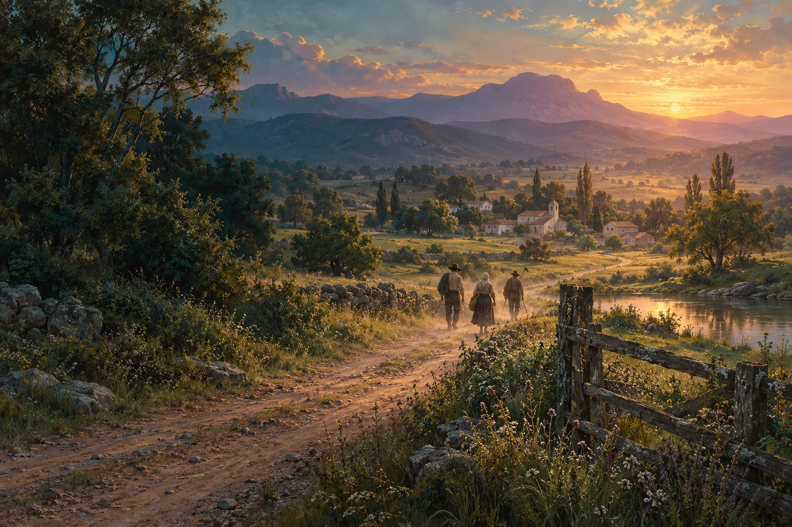
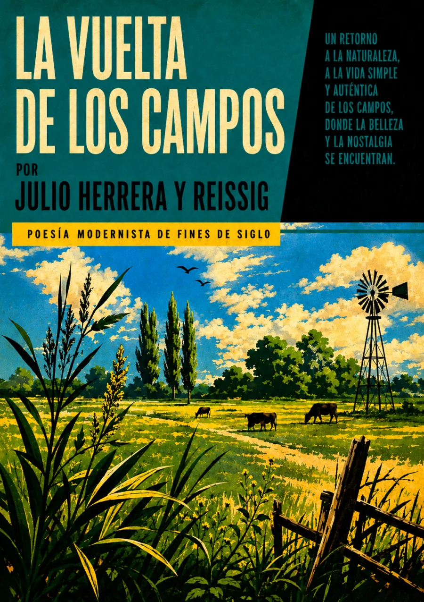

Audiolibros · Cuarta Ola
La vuelta
de los campos
Julio Herrera y Reissig · Publicación documentada: 1905
La tarde transforma el regreso.
Las faenas terminan bajo una luz de oro.
El paisaje cambia de voz.
Los caminos traen de vuelta a los labriegos.

El regreso tiene su propia música.
Volumen

La luz después de la faena
El soneto abre con una tarde que recompensa el trabajo con oro. En los umbrales, las mujeres cosen o trenzan sus cabellos; otras pasan con cántaros. El regreso de los labriegos aparece al final, preparado por una sucesión de gestos, colores y sonidos que acompasan el cierre del día.
No es un regreso al campo: es la vuelta de quienes han trabajado en él.
La referencia a Arcadia sitúa la escena en una tradición pastoral. Pero el paisaje no queda inmóvil: el silencio se interrumpe, los lagos pierden claridad y las cumbres se vuelven quiméricas. Proponemos leer esa transformación como el trabajo de la imaginación sobre lo cotidiano, no como una descripción transparente de un lugar real.
Publicación documentada en El Diario Español, Buenos Aires, 2 de abril de 1905, dentro de «Las manzanas de Amarillys»: Biblioteca Nacional de Uruguay · registro I398. Esta referencia no establece por sí sola la primera publicación. Texto · Iberoamérica lee poesía, OEI, p. 67. La imagen superior interpreta el paisaje del poema; no reconstruye una localidad identificada.
La lectura
Poema completo
Una lectura continua del soneto. Claves de escucha: el oro de la tarde, la alternancia de silencio y sonido, y el regreso que cierra la escena. Grabación pendiente de incorporación.
Reseñas

Bueno